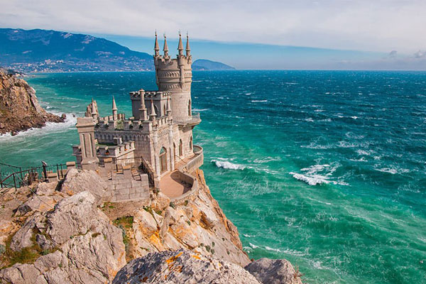

| Крым |
| Зачем ехать Увидеть шикарное побережье и разнообразить отдых на Черном море. Примерный автомобильный маршрут Самые красивые виды дарит дорога через Феодосию, Судак и Алушту. Вы въедете на машине в Крым по Керченскому мосту, а потом вас ждут природные красоты и уникальные крымские сооружения. Дорога на машине на море часто заходит и в горы — кстати, учитывайте, что заправок там нет. Путешествовать по Крыму без остановок нет смысла, иначе пропустите много интересного. Посетите картинную галерею Айвазовского в Феодосии, искупайтесь в море в тихом Коктебеле, полюбуйтесь Генуэзской крепостью в Судаке, пройдите по тропе Голицына в Новом Свете. Наиболее красивые серпантины попадутся вам на подступах к Алуште, а путешествие можно закончить в Ялте или Севастополе |
|  |  |
| Краснодарский край | |||||||||||||||||||||||||
| Зачем ехать За полноценным отпуском на юге. Примерный автомобильный маршрут На черноморском побережье хватает городов — и больших, и маленьких. За 5–6 дней можно объехать почти все, а заодно посетить соседнюю Абхазию или поправить здоровье в Кавказских Минеральных Водах — например, в Кисловодске. Поехать на машине летом можно в любом направлении побережья. Советуем заглянуть в Витязево — тихое местечко рядом с Анапой, которое славится чистыми пляжами. Южнее мы выделим Новороссийск с его просторной набережной и Абрау-Дюрсо с винным заводом и запахом можжевельника в воздухе. Само собой, поездка не обойдется без Сочи. Размяться после дороги можно с помощью экскурсии на гору Ахун с ее отличной обзорной площадкой. | |||||||||||||||||||||||||
|
|
|||||||||||||||||||||||||
| |||||||||||||||||||||||||